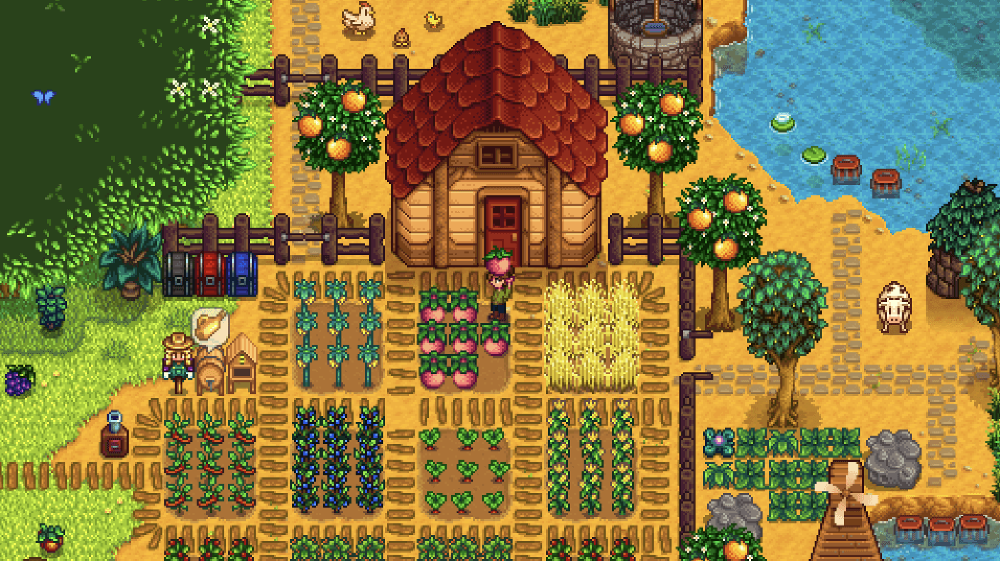
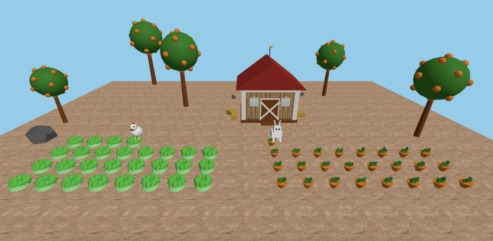
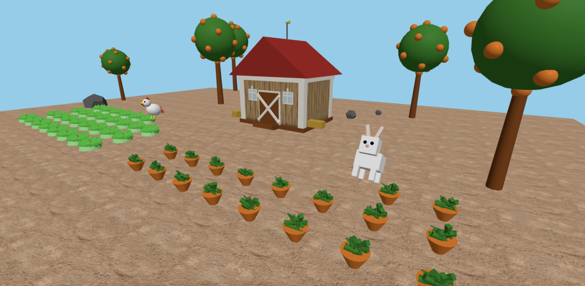

CS 307 Graphics Project by Samiksha Singh
Basic Idea
For my project, I created a 3D interactive scene inspired by Stardew Valley, one of my favorite games. I wanted to challenge myself to recreate elements from this 2D game in a 3D environment using Three.js. The scene features a bunny hopping through a carrot field, a chicken hopping through a lettuce field, and a barn in the background.
I was inspired by the peaceful farm environment from Stardew Valley and wanted to capture that same charming, relaxing atmosphere while adding interactive elements.

My Project
My 3D scene contains several key elements:
- Interactive Animals: Both the bunny and chicken hop through their respective fields in a zigzag pattern, eating vegetables as they go.
- Vegetable Fields: The scene has a carrot field on the right side and a lettuce field on the left side, organized in grids.
- Barn Structure: A barn with texture mapped walls sits in the background.
- User Controls: The scene allows the user to control camera angles and animal movements through keyboard inputs.
- Animation: Animals hop with realistic bouncing motion and can face different directions.
The most challenging aspects were creating the zigzag hopping pattern for the animals and implementing proper collision detection for when they "eat" vegetables. I ended up using a grid-based system with row and column tracking to manage the positions and interactions.
Camera Controls
1 Default camera view
2 Overhead view
3 Bunny field view
4 Hen field view
5 Back view
6 Ground level view
Bunny Controls
S Move bunny up
A Move bunny left
W Move bunny down
D Move bunny right
F Bunny face forward
H Bunny face left
G Bunny face right
B Bunny face backward
Chicken Controls
K Move chicken up
J Move chicken left
I Move chicken down
L Move chicken right
T Chicken face forward
U Chicken face left
Y Chicken face right
N Chicken face backward
The project uses modular code organization, with separate files for each 3D model (bunny, hen, carrot, lettuce, barn, etc.). This approach made the code more maintainable and allowed me to focus on one component at a time.


Technical Highlights
Some of the key technical aspects I implemented include:
- Animation: Used sine functions for realistic hopping motion
- Grid Organization: Organized vegetables in grids for efficient collision detection
- Camera Presets: Created multiple camera views to showcase different angles of the scene
- Direction Control: Independent control of animal movement and facing direction
- Texture Mapping: Applied dirt textures to the ground with proper repeating patterns
- Scene Lighting: Implemented ambient and directional lighting for realistic shadows
When an animal completes eating all vegetables in their field, the field regenerates automatically, allowing for continuous animation.
The Running Project
Here is a link to the project itself. Use the keyboard controls listed above to interact with the scene!